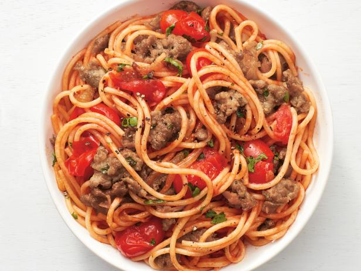

Claires's Spaghetti

Description
This is a fresh take on Grandpa's Spaghetti.
It is important that the tomatoes are fresh and if possible, use fresh herbs as well.
Ingredients
- ~1lb fresh tomatoes (Roma preferred), quartered
- Olive oil
- 1 head of garlic, minced
- 1 onion, finely chopped
- Handful fresh herbs (basil, oregano), coarsely chopped
- (Optional) 1 tbsp brown sugar
- 1lb hot italian sausage
-
- 1 package spaghetti noodles
- Salt and pepper, to taste
Steps
- Quarter the tomatoes, chop onions and herbs, and mince garlic
- In large pan, heat olive oil over medium heat, then add onion/garlic. Cook 5 minutes.
- Add quartered tomatoes and cook for 5-10 minutes, or until tomatoes begin to soften.
- Using an immersion blender, blend up the tomatoes (it's okay if there are chunks left).
- Add 1/2 of the chopped herbs. Bring pan to low simmer. Cover and cook, upwards of 3 hours.
- Add in remaining herbs, salt and pepper to taste, and (optional) brown sugar.
- Form patties from italian sausage. In cast-iron skillet, cook over high-heat, flipping once. Add to sauce.
- Cook spaghetti noodles in salted water per directions on box.
- Combine and enjoy!
Return to home